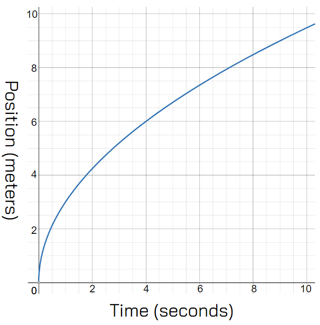
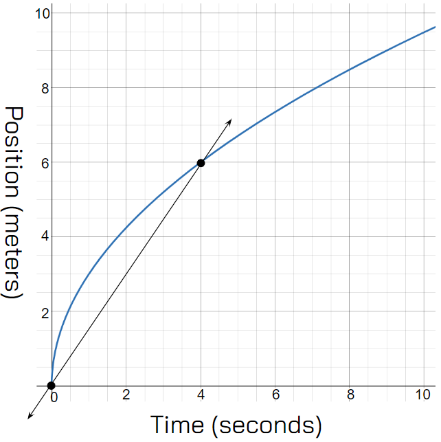
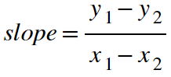
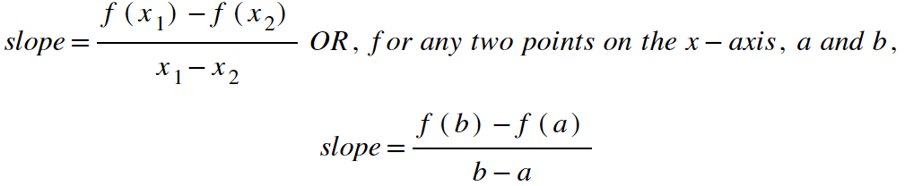
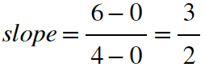
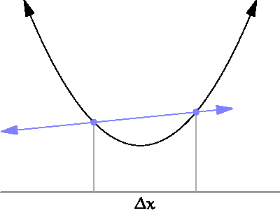
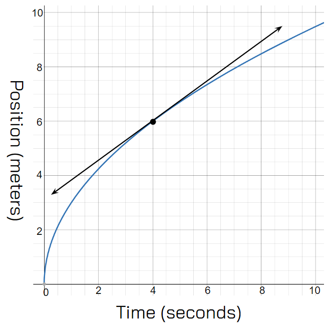

Back to Home
Keaton Hawkins AP Calculus AB Final
Suppose you were presented with the the position vs. time graph for a car shown below, and asked to find the car's average velocity between the times t=0 and t=4:

That's quite a straightforward task, right? To find the velocity, just find the slope between those two points:

Mathematically, we can use the slope formula that we all know. Slope is equal to rise over run, or change in y over change in x:

Remember that y is a function of x, and the values of y1 and y2 are the values of the function at x1 and x2 respectively. So, this formula can also be written as follows:

In any case, for our simple problem above, we could use our two points, (0,0), and (4,6) to calculate the car's average velocity between time t=0 and t=4:

Simple enough, right? Now let's change the problem slightly to the following: What is the car's velocity at time t=4? I'll even tell you that the graph of the car's position vs. time is modelled with the function y= √ 9x. This problem is much more challenging than the simple slope problem above. In fact, it's almost paradoxical. The slope of a graph is its rate of change, right? How can you find a rate of change at a single point? There's no range for any change to happen!
Well, it turns out there is a nice way to think about this question. To find the car's velocity at time t=4, you start by considering the slope between two points, just like normal. Then, you slide the two points closer and closer to each other, and consider what happens when the distance between them is zero, and both points are at t=4. In other words, you consider what the slope approaches as the distance between the two points on the x-axis approaches 0. All this use of the word approaches sounds familiar, right? It should remind you of limits, which we'll get to in a moment. For now, let's see what this means on a graph:

As you can see, in order to find the slope of this generic parabola at a single point (the point on the left) you start by finding the regular slope between two points, then slide those points closer and closer together along the x axis until they are exactly the same. What you're left with is a line that is tangent to the graph at the point on the left. The slope of this line is called the instantaneous rate of change at that point. So, to answer our question from above, all we need to do is find the slope of the line that is tangent to our position vs. time graph from above at the time t=4:

Ok, so we have a graphical intuition for instantaneous rates of change. But how do we go about calculating them? The instantaneous slope is different at every point along a curve. Wouldn't it be nice if we could take a function and use it to derive a new function which returns the slope of the original function at any given point? Well as it turns out, such a derived function exists for every curve. It's called a derivative.